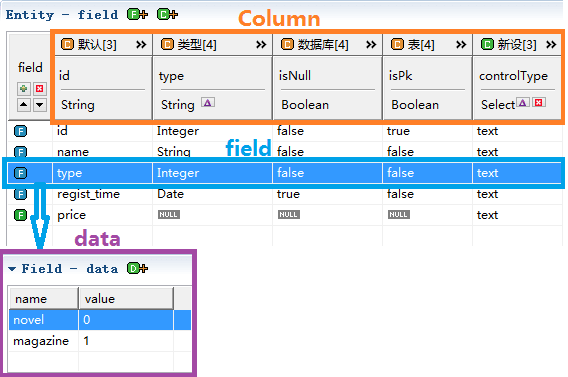
field、column、data在实际开发中的定位:
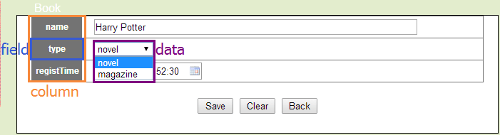
以下是模型界面的信息，配合这张图说明。
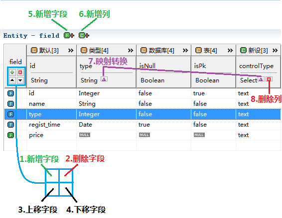
在1和5处点击可以新增加字段，或者鼠标右键点击新增，在此处填入新字段名price。
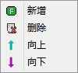
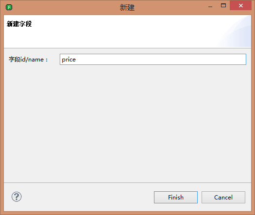
生成新字段price，可以看出，如果字段是新增的，图标颜色是绿色。
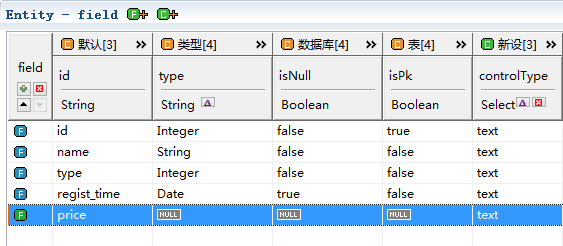
也可以通过预设生成字段，预设可以在模型转换（生成）时，就添加字段，详细方式请阅读预设字段Field。
在2处点击选中字段可以删除，或者选中字段鼠标右键删除，所有字段都可以删除。
在3处点击选中字段可以上移字段，或者选中字段鼠标向上，使用for标签的时候将改变字段的遍历顺序。
在4处点击选中字段可以下移字段，或者选中字段鼠标向下，使用for标签的时候将改变字段的遍历顺序。
除了id列不能修改外，其它所有字段的内容都可以修改。选中需要修改的内容，点击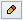可以修改内容。
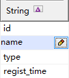
String类型：可以选择null也可以输入任意字符串。
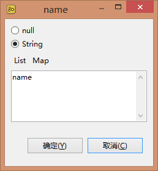
Boolean类型：可以选择null、true、false中任意一项。
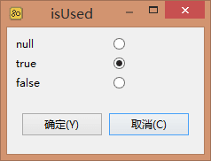
Select类型：可以选择null或者其他设定好的选项。
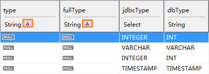
映射后的值
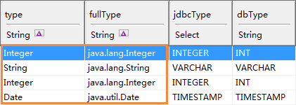
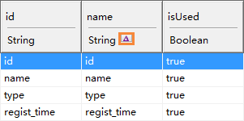
转换后的值
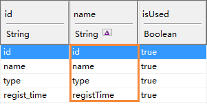
在实际的开发中，我们需要修改模型的内容，但都需要手动去做，有没有什么方法可以在模型转化(生成)的时候就设定好了呢？答案是有，那就是通过预设方案设定好。字段通过预设，可以省去大部分修改模型的时间，关于字段预设请阅读字段转换。
在实际开发中，单靠一个原始的模型的数据，是没法完全满足我们业务需求的。比如我们需要生成字段在界面上的名称fieldName（可能为英文也可能为中文），每个字段对应的控件类型（比如text、select、date），字段是否作为查询项isQuery。这就需要新增列来扩展字段的属性。
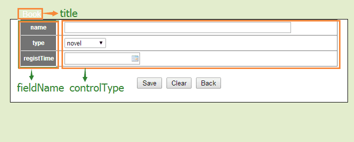
isQuery是字段是否要查询的标识
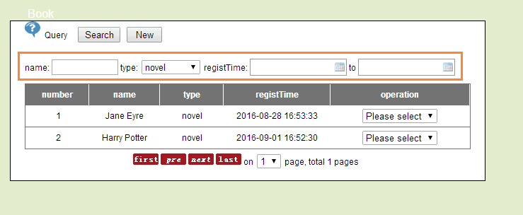
在6处点击新增列，新增列有3种类型String、Boolean和Select
String：字符串类型，可为null或者填写默认值。
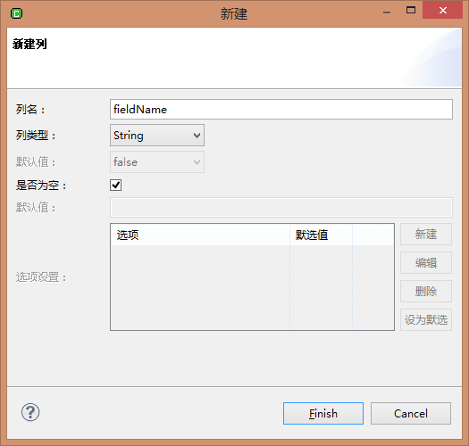
可以看到，新生成了列fieldName。
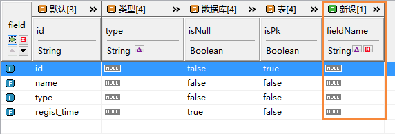
Boolean：布尔类型，可为null或者选择true或false。
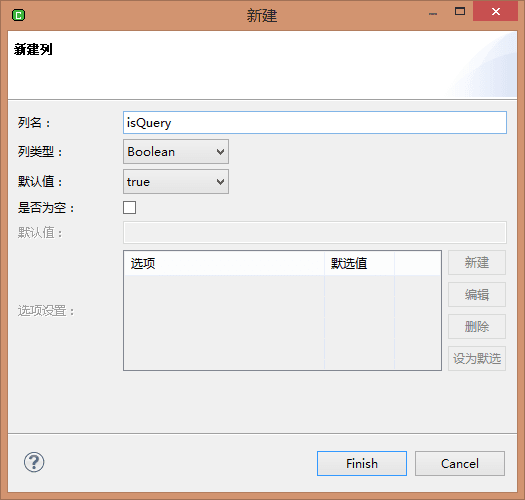
可以看到，新生成了列isQuery，值是true。
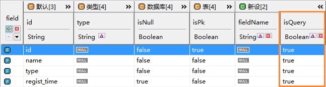
Select：多选类型，可以null，必须自己添加可选项，新列名为controlType(控件类型)，在下面的表格可以添加选项，我们添加了3种控件类型text、select、date，默认选项为text。
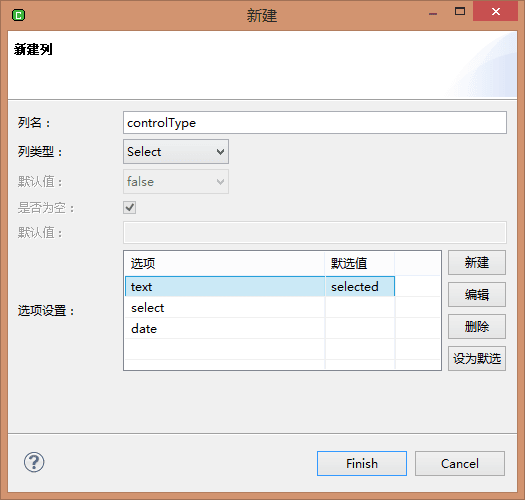
可以看到，新生成了列isQuery，默认值是text。
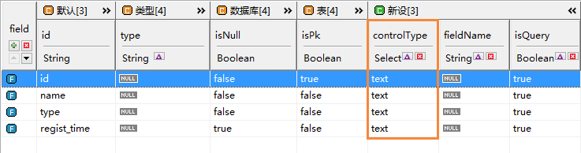
在8处可以删除列，只有新设的列才可以删除。
和修改field一样，点击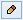修改。
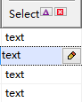
String类型修改
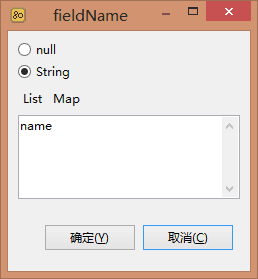
Boolean类型修改
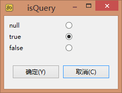
Select类型修改
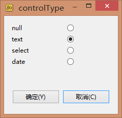
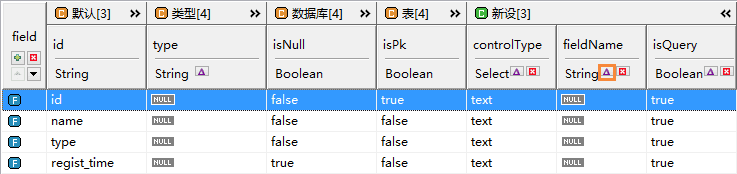
转换后的值
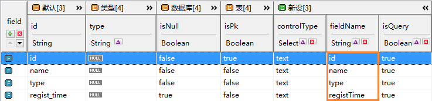
同预设field一样，在实际的开发中，我们需要修改模型的内容，但都需要手动去做，有没有什么方法可以在模型转化(生成)的时候就设定好了呢？答案是有，那就是通过预设方案设定好。字段通过预设，可以省去大部分修改模型的时间，关于字段预设请阅读字段转换。
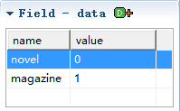
点击添加。
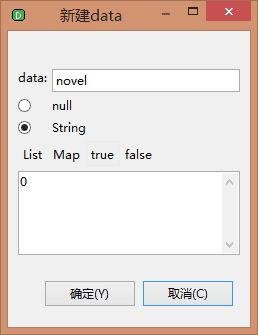
data有2个属性name和value。
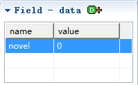
选中data项，鼠标右键删除。
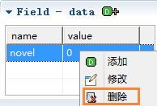
选中data项，鼠标右键修改。
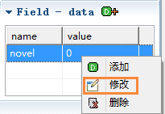
模型数据
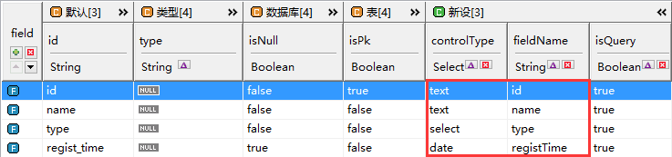
任务中选择模型
模板中选择模型（代码提示用）
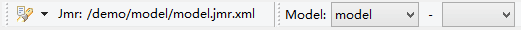
选中relation的值是one。
通过遍历field生成一个查询界面。
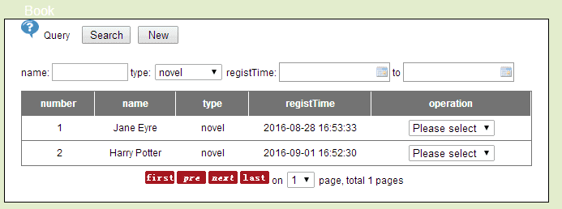
object是entity，使用for标签遍历object.fields这个集合，在for标签中使用get获取field的属性。
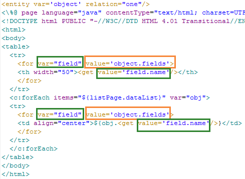
运行结果
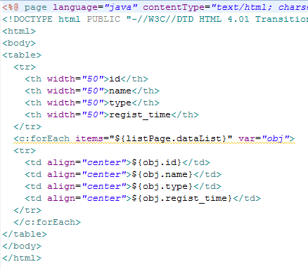
此处例子是一个简化版的查询界面，在实战中完整的例子请阅读：查询界面生成
小贴士：代码提示可以找到需要的属性。
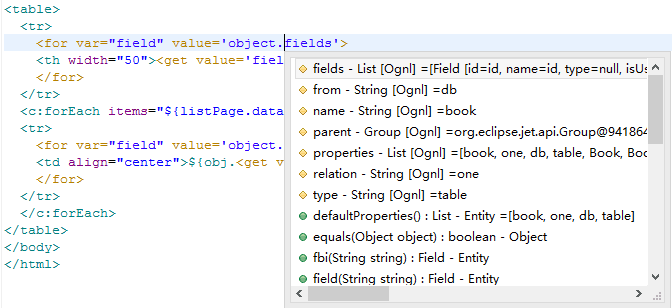
小贴士：选中或者鼠标悬浮可以看到对应数据。
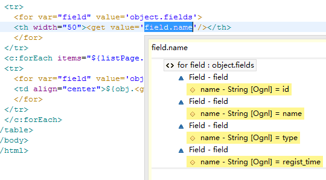
通过遍历field生成一个新增页面
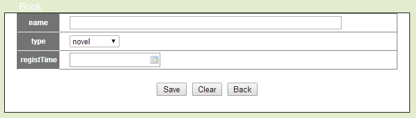
通过遍历field，field.property("fieldName")为字段在界面的名称，field.property("controlType")方法判断控件的类型，根据类型生成不同类型的控件。
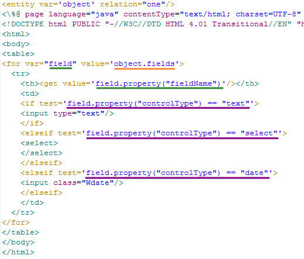
运行结果,根据
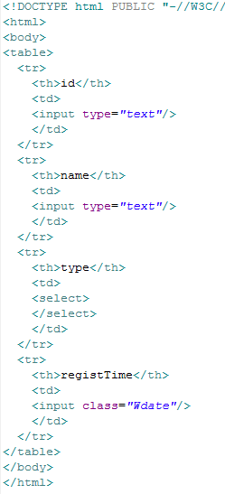
此处例子是一个简化版的新增界面，在实战中完整的例子请阅读： 新增界面生成。
小贴士：选中或者鼠标悬浮可以看到判断是否成立。
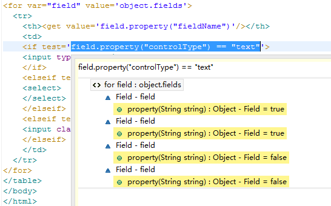
type字段的data数据。
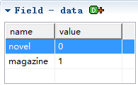
在新增页面中，type是一个包含选项的下拉框。
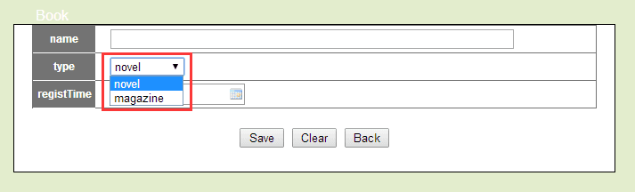
在之间的基础上，select控件的option中，value属性是data.value，标签值是data.name
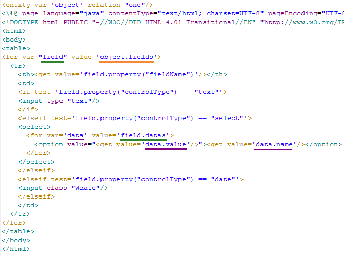
运行结果,根据
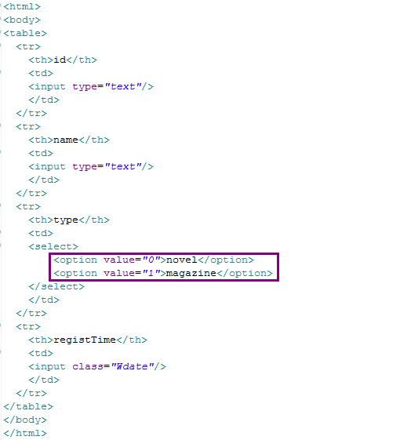
此处例子是一个简化版的新增界面，在实战中完整的例子请阅读： 新增界面生成。
小贴士：选中或者鼠标悬浮到data上可以看到数据。
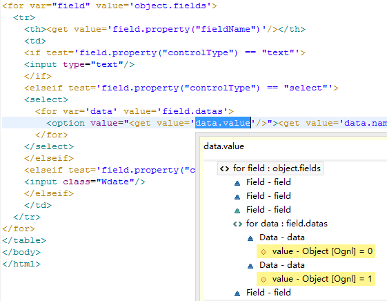